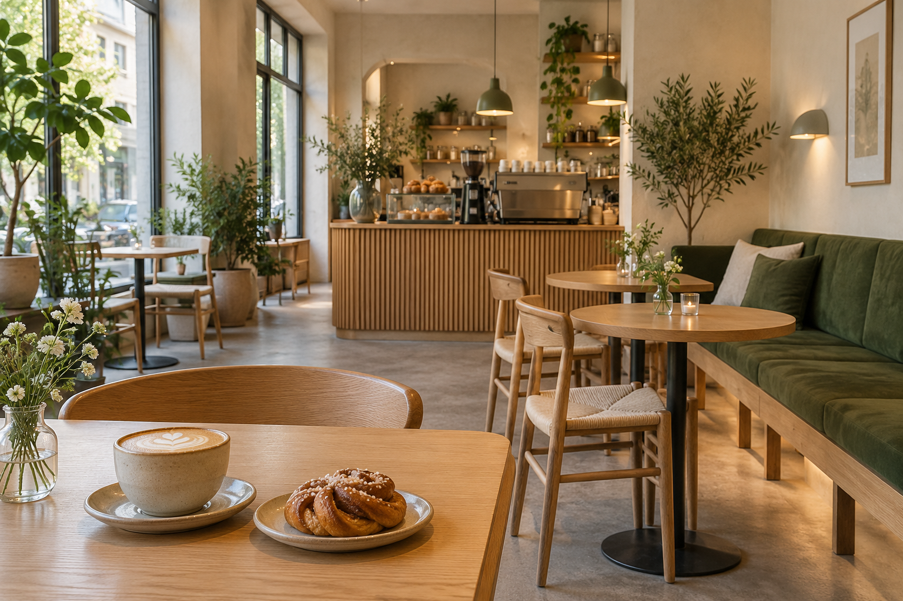
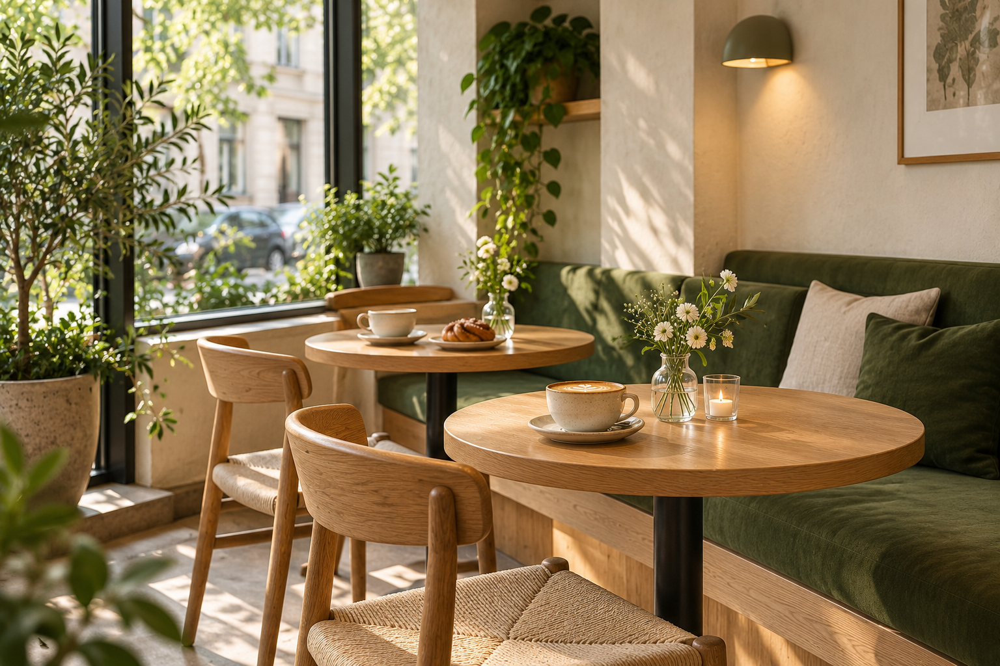
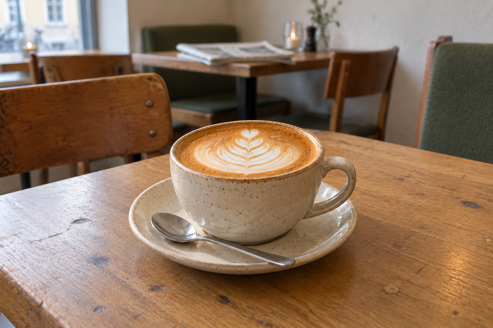
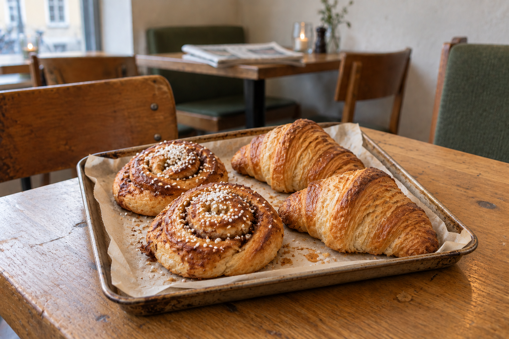

Filter coffee
Freshly brewed coffee with a rich, balanced flavour.
30 SEK
Your everyday pause for good coffee, fresh pastries, and warm company.
View our menu
Nordic Brew is a neighbourhood coffee shop inspired by the Scandinavian tradition of taking a break and enjoying the moment. We serve coffee, tea, pastries, and light sandwiches in a warm and welcoming space.
Whether you are meeting a friend, studying, or simply enjoying a quiet cup of coffee, there is a place for you here.
A cosy space, a favourite cup, and something freshly baked.



This café is fictional. The details below are examples for this educational project.
Email: hello@nordicbrew.nu